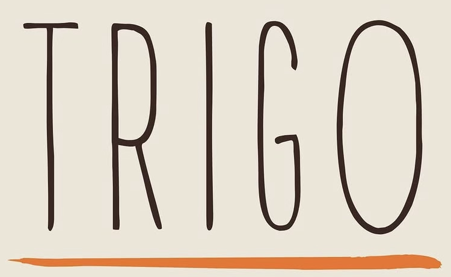
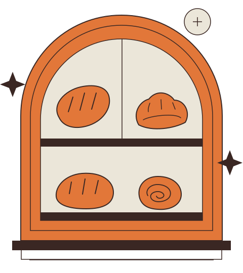

[DA CONFERMARE]

Informazioni sulla proposta
Demo indipendente per il forno in via Giulia di Barolo 25/A, Vanchiglia. Orari, menu e identità visiva da confermare.
Come arrivare su Google Maps · Instagram @fornotrigo
Attiva JavaScript per vedere la proposta completa.